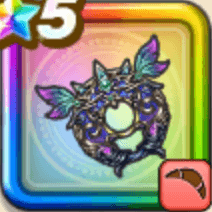

妖精の円月輪
攻略班 9.0点 / かまいたちマヌーサ妖精の秘術戒風のボレロいきなりピオリム
くわしい特徴
【レベル別習得スキル】 Lv1攻撃力+5 Lv1かまいたち（消費MP：5）エレメント系に威力180%それ以外の系統には130%の体技ダメージを与える Lv10マヌーサ（消費MP：16）敵全体を幻でつつみこむ Lv20妖精の秘術（消費MP：39）1ターンの間、仲間全員の会心率か暴走率、受けるスキルHP回復効果をかなり上げる Lv30戒風のボレロ（消費MP：49）敵全体に350%バギ属性体技ダメージを与え、1ターンの間、仲間全員の斬撃体技ダメージをかなり上げ、ガード・みかわしされなくなる Lv35鳥系へのダメージ+5% Lv40けもの系へのダメージ+5% Lv45攻撃力+12 Lv50いきなりピオリム（消費MP：8）戦闘開始時に仲間全員のすばやさを上げる(効果2ターン) 【限界突破スキル】 1凸スキルの斬撃・体技ダメージ+7% 2凸スキルの斬撃・体技ダメージ+7% 3凸スキルの斬撃・体技ダメージ+7% 4凸スキルの斬撃・体技ダメージ+7%